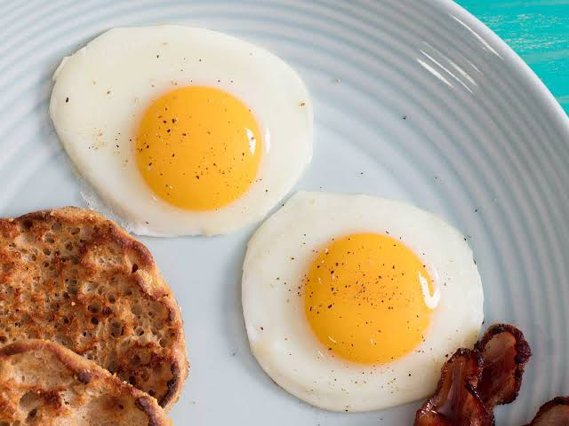

.jpeg)
Idli
Idli is a fluffy, moon-like steamed south Indian rice cake.

Omlette
Omlette
Wheat bread stuffed with spicy potato and toasted in butter.
.jpeg)
Dosa
A dosa is a thin batter-based pancake originating from South India, made from a
fermented batter predominantly consisting of lentils and rice.
.jpeg)
Lemon Tea
Lemon Tea is a refreshing tea where lemon juice is added in black or green
tea. It soothes the throat, prevents cough and congestion, and helps in weight loss.
.jpeg)
Aloo Paratha
Aloo paratha are popular Indian flatbreads stuffed with a delicious spiced
potato mixture. In Hindi, Aloo means "Potatoes" and Paratha means "Layered Flatbreads".
.jpeg)
Poori Bhaji
Puri bhaji (sometimes spelled poori bhaji) is a dish, originating from the
Indian subcontinent, of deep-fried rounds of flour and potato bhaji.
.jpeg)
Upma
Upma, uppumavu, or uppittu is a dish originating from the Indian subcontinent, most
common in Kerala, Andhra Pradesh, Tamil Nadu, Telangana, Karnataka, Maharashtrian, and Sri
Lanka.
.jpeg)
Egg Sandwich
An egg sandwich is a sandwich with some kind of cooked egg filling. Fried
eggs, scrambled eggs, sliced boiled eggs and egg salad (a mix of chopped cooked egg and
mustard and mayonnaise) are popular options.
.jpeg)
Holige
Obbattu, also referred to as Holige, is a sweet dish of Karnataka made during
festivals and special events.